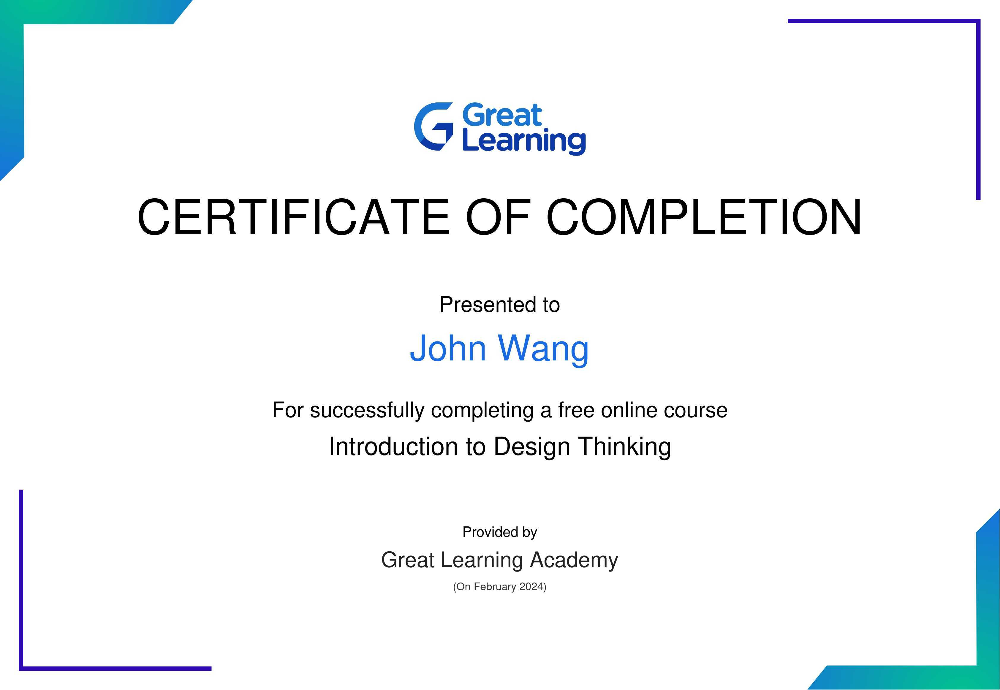
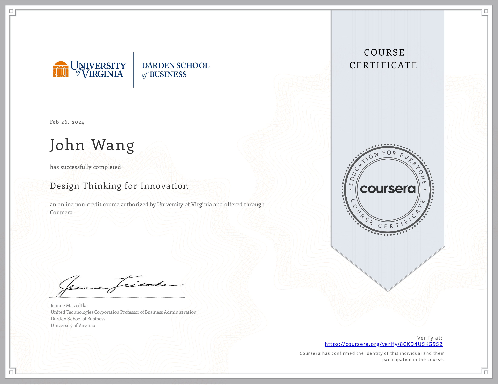

John's Design Thinking Certificates
Resources
Innovation (1)
Introduction to Design Thinking from Great Learning Academy by Milind Kopikare

Frameworks (2)
Design Thinking for Innovation from University of Virginia, Darden School by Jeanne M. Liedtka

Customer-Centric IT Strategy from University of Virginia, Darden School by Alex Cowan
Agile (1)
Certified Professional In Design Thinking (CPDT) from Scrum Institute by Yeliz Obergfell